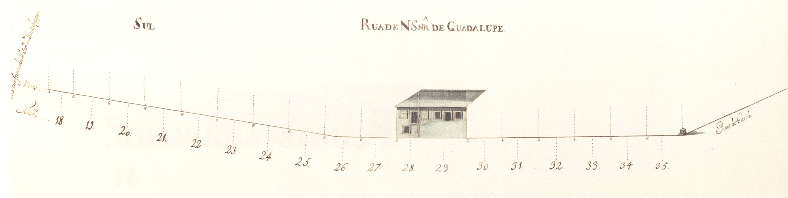
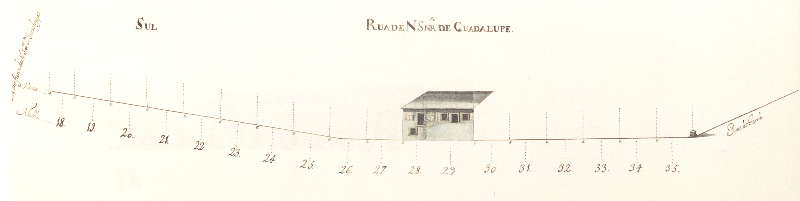

Rua de Nossa Senhora de Guadalupe
Imagens antigas:
 

Imagens atuais:


Descrição:
Rua íngreme, pertencente ao complexo urbanístico do campo Novo, ligava a Capela de Guadalupe à praça do Gavião. campo Novo, ligava a Capela de Guadalupe à praça do Gavião.
Aberta também em 1725, tinha já, nesta data, quase todas as suas casas construídas, no lado Norte. Eram simples, na sua grande maioria de um só piso, e que, contrariamente à rua de S. Gonçalo, se estendiam pela encosta acima, até à rua em Frente de Nossa Senhora de Guadalupe. 1725, tinha já, nesta data, quase todas as suas casas construídas, no lado Norte. Eram simples, na sua grande maioria de um só piso, e que, contrariamente à rua de S. Gonçalo, se estendiam pela encosta acima, até à rua em Frente de Nossa Senhora de Guadalupe.
Na parte Sul estavam apenas construídas 2 habitações, sensivelmente no meio da rua, na parte plana. Eram edifícios de 2 pisos, em pedra, mas de desenho tradicional. Infelizmente o desenho está um pouco destruído, cortando todo o piso térreo da casa do prazo n.º 9 e um pouco da do anterior.
Todas as 17 casas aqui apresentadas são prazos do Cabido. Cabido.
Ainda hoje é denominada rua de Guadalupe. rua de Guadalupe.
Lista das casas
-
Número 1 e 2 Enfiteuta D. Agostinha Maria de Barros Gavião, enfiteuta principal do prazo do casal dos Chãos ou Quinteiro. Foro ??? Descrição «Chãos de casas» do prazo do casal dos Chãos ou Quinteiro. O chão n.º 1 confronta, do poente, com o chão n.° 26 da Praça do Gavião. casal dos Chãos ou Quinteiro. O chão n.º 1 confronta, do poente, com o chão n.° 26 da Praça do Gavião.
-
Número 3, 4, 5 e 6 Enfiteuta D. Agostinha Maria de Barros Gavião, enfiteuta principal do prazo do casal dos Chãos ou Quinteiro. Foro ??? Descrição Pertencem ao casal dos Chãos ou Quinteiro. Nos livros dos prazos do cabido não se encontram escrituras de subemprazamento. casal dos Chãos ou Quinteiro. Nos livros dos prazos do cabido não se encontram escrituras de subemprazamento.
-
Número 7 Enfiteuta D. Agostinha Maria de Barros Gavião, enfiteuta principal do prazo do casal dos Chãos ou Quinteiro. Foro ??? Descrição Ursula Vieira, e suas irmãs, Vitoriana Josefa e Joana Antónia, pagam 1200 reis ao enfiteuta do prazo do casal dos Chãos ou Quinteiro, à face do qual foi subemprazada em 1745. Ursula Vieira, e suas irmãs, Vitoriana Josefa e Joana Antónia, pagam 1200 reis ao enfiteuta do prazo do casal dos Chãos ou Quinteiro, à face do qual foi subemprazada em 1745.
-
Número 8 Enfiteuta D. Agostinha Maria de Barros Gavião, enfiteuta principal do prazo do casal dos Chãos ou Quinteiro. Foro ??? Descrição António Gomes, pedreiro, casado com Ana Gomes, paga 1200 reis ao enfiteuta do prazo do casal dos Chãos ou Quinteiro, à face do qual foi subemprazado em 1725. António Gomes, pedreiro, casado com Ana Gomes, paga 1200 reis ao enfiteuta do prazo do casal dos Chãos ou Quinteiro, à face do qual foi subemprazado em 1725.
-
Número 9 a 17 Enfiteuta D. Agostinha Maria de Barros Gavião, enfiteuta principal do prazo do casal dos Chãos ou Quinteiro. Foro ??? Descrição Luís Cardoso Coutinho de Oliveira, casado com Antónia José Leonor de Vasconcelos, paga 7800 reis ao enfiteuta do prazo do casal dos Chãos ou Quinteiro, conforme o subemprazamento de 1740. Luís Cardoso Coutinho de Oliveira, casado com Antónia José Leonor de Vasconcelos, paga 7800 reis ao enfiteuta do prazo do casal dos Chãos ou Quinteiro, conforme o subemprazamento de 1740.
Ao prazo pertencem, ainda, os n.° 1 a 6 da rua em frente de N. Sra. de Guadalupe. rua em frente de N. Sra. de Guadalupe.
Os n.° 9 e 10, encontram-se unidos desde o ano de 1725. 1725.
À face da escritura do ano de 1740 foram feitos títulos subalternos das casas n.° 14, 15, 16 e 17. 1740 foram feitos títulos subalternos das casas n.° 14, 15, 16 e 17.
-
Número 18 a 27 Enfiteuta D. Agostinha Maria de Barros Gavião, enfiteuta principal do prazo do casal dos Chãos ou Quinteiro. Foro ??? Descrição «Chãos de casas» do prazo do casal dos Chãos ou Quinteiro. O chão n.° 18 confronta, do nascente, com a rua em frente de N. Sra. de Guadalupe. casal dos Chãos ou Quinteiro. O chão n.° 18 confronta, do nascente, com a rua em frente de N. Sra. de Guadalupe.
-
Número 28 e 29 Enfiteuta D. Agostinha Maria de Barros Gavião, enfiteuta principal do prazo do casal dos Chãos ou Quinteiro. Foro ??? Descrição Pertencem ao casal dos Chãos ou Quinteiro, a cujo enfiteuta se paga foro. Nos livros dos prazos do cabido não se encontram escrituras de subemprazamento. casal dos Chãos ou Quinteiro, a cujo enfiteuta se paga foro. Nos livros dos prazos do cabido não se encontram escrituras de subemprazamento.
-
Número 30 a 35 Enfiteuta D. Agostinha Maria de Barros Gavião, enfiteuta principal do prazo do casal dos Chãos ou Quinteiro. Foro ??? Descrição «Chãos de casa» do prazo do casal dos Chãos ou Quinteiro. O n.° 35 confronta, do poente, com o n.° 27 da Praça do Gavião. casal dos Chãos ou Quinteiro. O n.° 35 confronta, do poente, com o n.° 27 da Praça do Gavião.